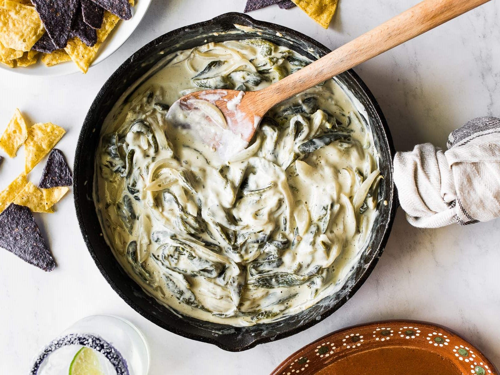

Rajas con crema is a hearty Mexican dish consisting of strips of Poblano chiles in heavy cream with onions and butter. The dish is so popular in Mexico that there are even rajas con crema-flavored snacks such as potato chips. The dish can be consumed on its own when paired with a tortilla, but it is more commonly served as a side dish to various meat dishes.
Meal prep time : 25 minutes
Servings : 4